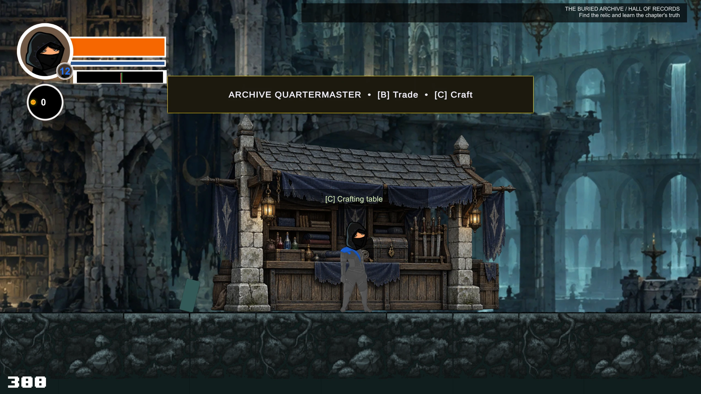
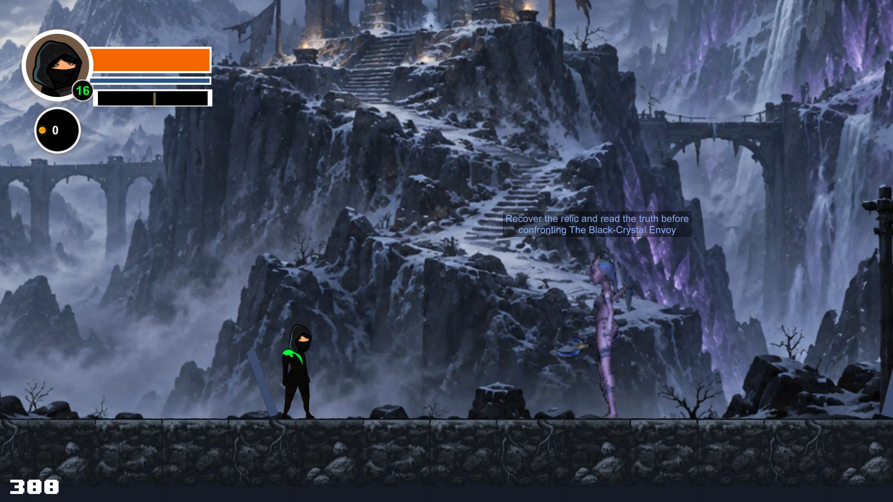
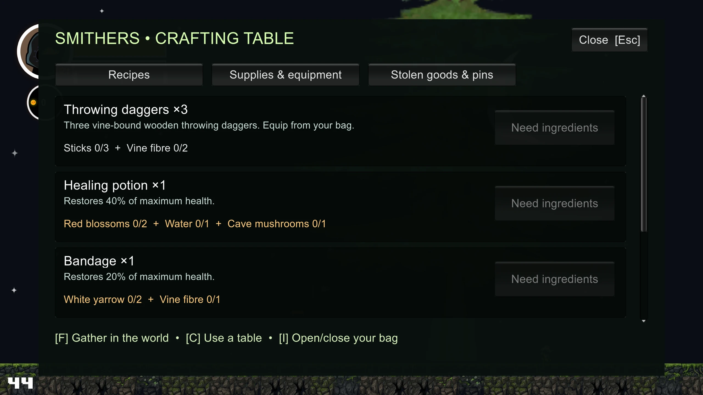
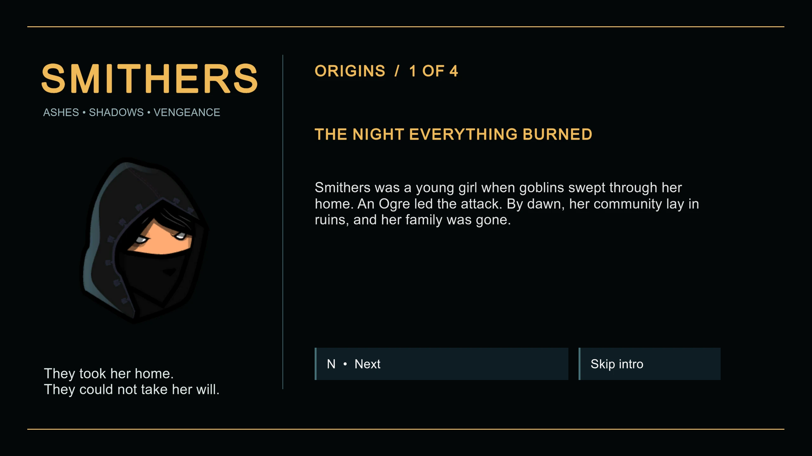

Development journal / October update
Smithers: skill choices, crafting and a bigger journey
Smithers now has a 23-skill tree, a larger crafting catalogue and more developed later chapters. The choices extend from how she climbs and fights to the route through a castle, a mountain ascent and a crystal tower.
About this update: the current systems and level layouts described here are based on an October 21, 2026 source review of the Unity project, not a fresh gameplay test. Every screenshot is a historical image from September 13 or 17, 2026 and shows an earlier build. No new gameplay images were captured for this update.

Smithers is a side-scrolling fantasy action adventure being built in Unity. You guide a hooded fighter through towns, forests, marshes and strongholds. Sword fights and platforming carry the action; supplies, discoveries and Karma shape the decisions between them.
The biggest change from the September first look is progression. Character levels now provide points to allocate across a skill tree. Movement abilities, combat techniques and alchemy compete for those points, so preparing for the next chapter involves choosing how Smithers develops as well as what she carries.
23 skills, with choices behind the upgrades
The current tree contains 23 skills across neutral, white and black branches. Smithers earns one skill point per character level, with progression capped at level 25. Skills have rank requirements and prerequisites, and there is one free skill reset each chapter.
The tree covers climbing, Feather Fall, smoke mastery, dagger upgrades, sword techniques and alchemy. White and black allocations also affect Karma. A build therefore changes both Smithers' capabilities and her moral direction.
Level eligibility is only part of an unlock. Double Jump becomes eligible at character level 3 and Wind Rider at level 7. Both require the relevant skill allocation and prerequisites; reaching the level alone does not grant the ability.
Sword training also uses skill points. The former gold-purchase route is disabled. Gold remains part of shopping and preparation, while training draws on the same limited points as the rest of the tree.
Seven chapters, with more to navigate
Seven campaign scenes are enabled in the project. The early chapters establish the town, forest, jungle and marsh journey; the later layouts now give Smithers larger spaces and more specific objectives.
- Town, forest and cave. The opening chapter introduces the community and the search that takes Smithers away from home.
- The dark forest and jungle. The second chapter continues the trail through the forest and jungle setting.
- The Drowned Marsh. The third chapter carries the journey into dangerous wetlands and the mystery of the First Seal.
- The castle. Level 4 has seven main rooms and three secret chambers, giving the castle a structure to search rather than a single encounter space.
- The Broken Mountain. Level 5 is a continuous ascent with a sagging bridge and shelters along the climb.
- The Black Citadel. Level 6 centres on a five-floor crystal tower, with lava and a timed rescue lift.
- The final portal. Level 7 brings four ward crystals into the route to the final portal decision.
These are implemented layouts and systems identified in the project review. Their presence in the source does not establish how reliably every route, encounter or rescue plays through. That distinction matters as the chapters become more involved.

Crafting grows beyond the first five recipes
The current crafting catalogue contains 19 recipe entries across crafting levels 1–3. The September article described five recipes; that was the smaller catalogue at the time, not the limit of the current system. Alchemy is also represented in the skill tree, connecting preparation to character development.
Crafting gives gathered materials a purpose between encounters. Healing, ammunition and smoke supplies all feed back into the journey. A cave mushroom used for healing cannot also go into a smoke bomb; shared ingredients make preparation a choice about what the next stretch needs.
Historical reference: the five recipes in the September first look
These examples, quantities and effects are retained from the September 17, 2026 article. They document that earlier build and are not a complete or current recipe guide.
3 throwing daggers
3 sticks + 2 vine fibre
Transferred from the bag to refill dagger ammunition.
Healing potion
2 red blossoms + 1 water + 1 cave mushroom
Restored 40% of maximum health.
Bandage
2 white yarrow + 1 vine fibre
Restored 20% of maximum health.
Smoke bomb
2 pine cones + 1 cave mushroom + 1 vine fibre
Refilled the smoke-bomb ability from the bag.
Marsh tonic
2 violet blooms + 1 white yarrow + 1 water
Cleared a current slowing effect; new swamp exposure could slow Smithers again.

Karma reaches into the skill tree
Karma remains part of Smithers' identity. The skill system now makes white and black allocations another way to affect it, alongside the choices introduced in the original first look.
Historical reference: Karma and stealing in the September build
The September article recorded Karma from −100 to +100, starting at neutral. Taking a valuable cost 8 Karma. Positive Karma discounted shop prices, while sufficiently negative Karma could prevent trading. Those were the recorded values for that build, rather than freshly tested balance figures for this update.
The earlier lock-picking sequence asked the player to set pins and turn the lock before their timers expired. Entering a home and taking a valuable were separate decisions; the theft carried the Karma penalty.
A survivor looking for the truth
The story introduced in the September first look begins with Smithers losing her home and family in an attack led by an Ogre. She survives on the streets before a blind master takes her in and trains her. Her return sets up a search for the people and motives behind the attack.
That background gives the systems a common thread. Skills shape how she gets through an obstacle. Crafting turns exploration into supplies. Karma follows the choices she makes along the way. The current final chapter adds a portal decision at the end of that journey.

Where the work stands on October 21
The project has a broader skill system, more crafting entries and more developed later chapters. This update describes their state at the October 21 review; it does not date every change to a particular week.
Existing October 21 test reports record passing castle, citadel, tower, later-chapter and smoke suites. They also record two Level 2 failures and three Level 3 failures. Those reports were not rerun during this review, and no fresh gameplay test was completed for this article.
Smithers remains in development. The skill choices and chapter layouts give the adventure more depth, while the recorded failures leave concrete work to investigate before making stronger claims about the build. The next useful milestone is a tested journey through those systems together.